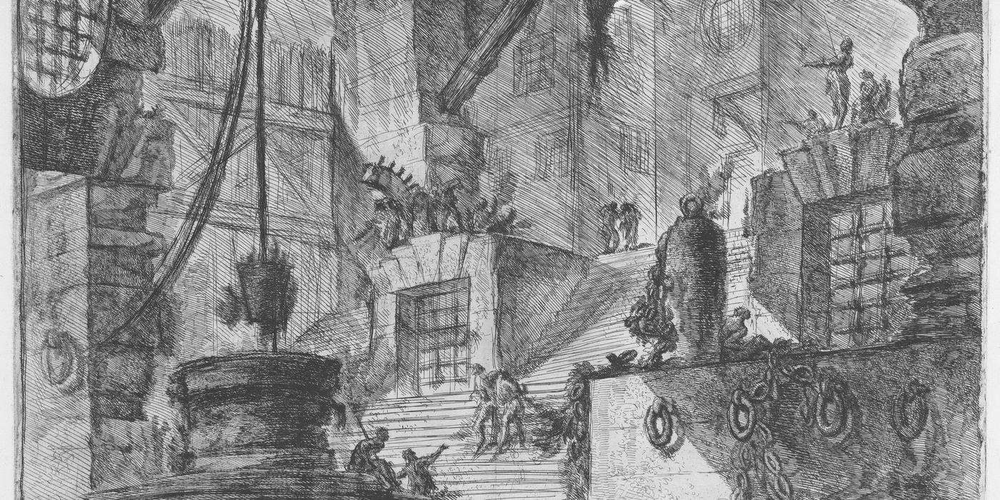

Produção acadêmica
Publicações e produções
Seleção da produção bibliográfica. A lista completa está no Currículo Lattes e boa parte dos textos está disponível no Academia.edu.
Livros
- 2019As ciências criminais no século XXI: novas tendências do Direito Penal, do Processo Penal e da CriminologiaCom Rodolfo Macedo do Prado e Luis Irapuan Campelo Bessa Neto. Habitus.
Sinopse
A ideia principal desta obra é a de discutir, de forma acadêmica mas com aplicação prática, os crimes de colarinho branco, o caixa 2 eleitoral, a corrupção privada, a quebra de sigilo de dados telefônicos, a colaboração premiada, o acordo de leniência, o plea bargaining, a teoria econômica do crime, a responsabilidade penal das pessoas jurídicas, a criminalização do enriquecimento ilícito, a regulamentação do lobby, a criminalização da homofobia, a lavagem de dinheiro, os standards probatórios, o direito penal do inimigo, a responsabilização de funcionários terceirizados pela prática de crimes funcionais e a ação civil de extinção de domínio.
- 2019Novos instrumentos de prevenção e enfrentamento à delinquência econômica: compliance, perda alargada e whistleblowingCom Rodolfo Macedo do Prado e Luis Irapuan Campelo Bessa Neto. Habitus.
Sinopse
Esta obra é fruto do projeto “Consultor Penal”, lançado há cerca de um ano pelos três autores, no qual as inquietudes quanto à ineficiência das tradicionais formas de enfrentamento à delinquência econômica pelo Estado levaram ao aprofundamento de estudos sobre temas e institutos largamente utilizados por países desenvolvidos e que tiveram sucesso naquela missão. A partir disso, foram elencados os três principais temas, todos contidos em pelo menos um dos “pacotes anticorrupção”, em que se enquadram o Pacote Anticrime, do Ministro Sergio Moro, as Dez Medidas Contra a Corrupção, do Ministério Público Federal, e as Novas Medidas Contra a Corrupção, da ONG Transparência Internacional em conjunto com a Fundação Getúlio Vargas. O compliance, a perda alargada e o whistleblowing são instrumentos que ou já foram incorporados ou estão prestes a serem de forma definitiva ao ordenamento brasileiro e, por isso, sua análise aprofundada é vital para a melhor compreensão desses institutos - objetivo primário deste livro.
- 2016O princípio da paridade de armas no processo penal: a igualdade de partes em face da investigação criminal pelo Ministério Público e pela defesaEmpório do Direito.
Sinopse
A investigação criminal promovida pelo Ministério Público é realidade cujas origens remetem à Lei de Ação Civil Pública, de 1985. Desde então, e sobretudo com o advento da Constituição Federal de 1988, trata-se de prática crescente no seio do Parquet. Fato relevante nessa trajetória é a recente prolação, pelo Supremo Tribunal Federal, de decisão que considerou legítima a prática investigativa pelo Ministério Público, que praticamente sepultou a celeuma doutrinária e jurisprudencial a respeito do tema. Esse novo fenômeno, longe de limitar-se à fase da instrução preliminar, produz efeitos ao longo de toda a persecução penal. Nesse novo cenário, é fundamental destacar a nova configuração pelo princípio da paridade de armas: mais que uma igualdade estática entre as partes, um equilíbrio dinâmico que se conforma distintamente a cada nova etapa da persecução penal.
BibTeX
@book{cardoso2016principio, author = {Cardoso, Luiz Eduardo Dias}, title = {O princípio da paridade de armas no processo penal: a igualdade de partes em face da investigação criminal pelo Ministério Público e pela defesa}, publisher= {Empório do Direito}, year = {2016}, url = {https://www.academia.edu/40976425/O_princ%C3%ADpio_da_paridade_de_armas_no_processo_penal_a_igualdade_de_partes_em_face_da_investiga%C3%A7%C3%A3o_criminal_pelo_Minist%C3%A9rio_P%C3%BAblico_e_pela_defesa} }
Artigos (seleção)
- 2025Legal and economic analysis of the changes enacted by Law n. 13,871/2019 on Maria da Penha LawRevista de Direito Econômico e Socioambiental.
Abstract
This article aims to analyze the legislative innovations and the changes that occur in the individuals’ incentives, which results from Law no. 13,871/2019. We investigate, through legal analysis, the goals of the policymakers on including new paragraphs in Maria da Penha Law and, through the Economic Theory of Crime, we elaborate a hypothetico-deductive analysis over the individuals’ incentives. We conclude that Law no. 13,871/2019 follows the initial principles that underlie Maria da Penha Law, which does not only restrict itself to the criminal sphere, but also expands the punishments to the civil sphere. In economic terms, we understand that simply raising the severity of the punishments will have little effect on combating violence against women, besides creating opposite incentives to victims that seek medical help. At last, a few considerations about future research on this theme are made.
ResumoEste artigo objetiva analisar as inovações legislativas e as mudanças nos incentivos dos indivíduos resultantes da sanção da Lei no 13.871/2019. Investiga-se, em uma análise jurídica, os objetivos dos legisladores com a inclusão de novos parágrafos à Lei Maria da Penha e, através da Teoria Econômica do Crime, elaboramos uma análise hipotético-dedutiva das implicações da mudança legislativa sobre os incentivos individuais. Conclui-se que, juridicamente, a Lei no 13.871/2019 segue o princípio subjacente à Lei Maria da Penha de não se restringir à esfera criminal, ampliando as sanções no âmbito cível. Sob a ótica econômica, entende-se que o simples aumento na severidade das penas pouco contribuirá para o combate a violência contra a mulher, com o agravante de gerar incentivos contrários às vítimas que procuram auxílio médico. Por fim, são feitas algumas considerações sobre pesquisas futuras dentro desta temática.
BibTeX
@article{cardoso2025legal, author = {Cardoso, Luiz Eduardo Dias}, title = {Legal and economic analysis of the changes enacted by Law n. 13,871/2019 on Maria da Penha Law}, journal = {Revista de Direito Econômico e Socioambiental}, year = {2025}, url = {https://www.academia.edu/144814777/Legal_and_economic_analysis_of_the_changes_enacted_by_Law_n_13_871_2019_on_Maria_da_Penha_Law} } - 2020Uma análise econômica do whistleblowingRevista do Instituto Brasileiro de Direito Penal Econômico.
Resumo
o whistleblowing, instituto de origem anglo-saxã que permite a concessão de remuneração a agentes que denunciem às autoridades a prática de ilícitos. Para a satisfação do objetivo do presente estudo – consistente em analisar eficiência do whistleblowing à luz da Análise Econômica do Direito –, o artigo, guiado pelo método dedutivo, parte da obra de Gary Becker, sob três diferentes abordagens. A primeira delas é a análise econômica neoclássica a respeito dos crimes e das punições, desenvolvida no artigo “Crime and punishment: an economic approach”, da qual se extrai que a elevação da probabilidade de detecção e condenação provoca efeito dissuasório sobre os potenciais criminosos. Na sequência, dialoga-se com o artigo “Law enforcement, malfeasance, and compensation of enforcers”, de Becker e Stigler, com o objetivo de avaliar, também sob a óptica econômica, a atuação do whistleblower como um enforcer privado. Por fim, articula-se a exposição a respeito do whistleblowing e a teoria da alocação do tempo, que Becker expõe em “A theory of the allocation of time”, uma vez que os benefícios concedidos ao whistleblower também devem ser sopesados à luz de uma análise econômica. Assim, utiliza-se a obra de Becker – principalmente os três trabalhos mencionados – como marco teórico deste artigo, cujo problema pode ser assim articulado: à luz da Análise Econômica do Direito, o whistleblowing representa uma medida eficiente no combate à criminalidade? A conclusão corrobora a hipótese inicialmente lançada, no sentido de que se trata, sim, de uma medida eficiente.
AbstractThis study presents whistleblowing, an Anglo-Saxon institute of origin that allows the granting of remuneration to agents who report to the authorities the practice of illicit acts. To satisfy the purpose of the present study – which is to analyze whistleblowing efficiency in the light of the Economic Analysis of Law –, the article, guided by the deductive method, is based on Gary Becker’s work, under three different approaches. The first of these is the neoclassical Economic Theory of Crime, developed in the article “Crime and Punishment: An Economic Approach”, which shows that the increased probability of detection and conviction has a deterrent effect on potential criminals. It then engages with the article “Law enforcement, malfeasance, and compensation of enforcers”, by Becker and Stigler, in order to evaluate, from an economic perspective, the whistleblower’s role as a private enforcer. Finally, the statement on whistleblowing and the theory of time allocation, which Becker expounds in “A Theory of the Allocation of Time”, is articulated, since the benefits granted to whistleblower must also be weighed in the light of an economic analysis. Thus, Becker’s work – mainly the three mentioned works – is used as the theoretical framework of this article, which problem can be articulated as follows: In light of the Economic Analysis of Law, whistleblowing represents an efficient measure in the fight against crime? The conclusion corroborates the hypothesis initially made in the sense that it is an efficient measure.
BibTeX
@article{cardoso2020analise, author = {Cardoso, Luiz Eduardo Dias}, title = {Uma análise econômica do whistleblowing}, journal = {Revista do Instituto Brasileiro de Direito Penal Econômico}, year = {2020}, url = {https://ibdpe.com.br/wp-content/uploads/2020/09/08-UMA-ANALISE-ECONOMICA-DO-WHISTLEBLOWING.pdf} } - 2020A inversão do ônus da prova na decretação da perda alargada: entre o Código Penal e a Lei n. 11.343/06Revista Brasileira de Direito Processual Penal.
Resumo
Este artigo aborda a perda alargada, recentemente incorporada ao Código Penal (artigo 91-A) e à Lei n. 11.343/06 (artigo 63-F), e aprecia um aspecto processual em particular, atinente ao ônus da prova subjacente àquela espécie de confisco. O problema remete à seguinte indagação: a perda alargada é operacionalizada a partir da inversão do ônus da prova? A hipótese dá conta de que a resposta não é unívoca: há inversão do ônus da prova no Código Penal, mas não há na Lei de Drogas. O trabalho, cuja realização é justificada em razão da novidade e da relevância do tema, é orientado pelo método dedutivo, uma vez que parte de acepções abrangentes acerca da perda alargada e busca formular uma conclusão pontual sobre a inversão do ônus da prova. A estrutura é segmentada em três seções: apresenta-se a perda alargada, com ênfase em seus antecedentes legislativos, em suas principais nuances dogmáticas e na disciplina dada pela legislação brasileira; aprecia-se a forma como é operacionalizada a questão probatória subjacente à perda alargada nos dois diplomas que a preveem; e reflete-se quanto às repercussões da eventual inversão do ônus da prova. O resultado da pesquisa confirma a hipótese introdutoriamente articulada.
AbstractThe present article aims to analyze the extended confiscation, recently incorporated to the Penal Code (article 91-A) and to the Drugs Act (article 63-F), and focuses on a specific procedural issue, regarding the burden of proof underlying the extended confiscation. The research problem can be summarized as the following: does the extended confiscation work based on a reversion of the burden of proof? The hypothesis points that there are two answers: reversion of proof exists in the Penal Code, however, it cannot be found in the Drugs Act. This paper, which is justified by the theme’s relevance and novelty, is guided by the deductive method, because it begins with broad considerations regarding the extended confiscation and aims to find a specific conclusion about the reversion of the burden of proof. Firstly, it presents the extended confiscation, emphasizing its legislative background, its main characteristics and Brazil’s laws. Later, the article shows how the proof regarding the extended confiscation is produced according both to the Penal Code and to the Drugs Act; finally, it reflects on the consequences following the reversion of the burden of proof. The research’s result confirms the hypothesis initially drawn.
BibTeX
@article{cardoso2020inversao, author = {Cardoso, Luiz Eduardo Dias}, title = {A inversão do ônus da prova na decretação da perda alargada: entre o Código Penal e a Lei n. 11.343/06}, journal = {Revista Brasileira de Direito Processual Penal}, year = {2020}, url = {https://revista.ibraspp.com.br/RBDPP/article/view/362} } - 2020A aplicabilidade dos standards probatórios ao processo penal brasileiroRevista Brasileira de Ciências Criminais.
Resumo
Neste artigo, promove-se uma reflexão acerca da aplicabilidade dos standards probatórios ao processo penal brasileiro. Para tanto, parte-se de uma apresentação introdutória acerca das provas no processo penal. Mais adiante, apresentam-se os standards probatórios, que correspondem aos níveis de prova exigidos em cada situação processual e são fixados de acordo com a espécie de processo de que se trata – civil ou penal – e o bem jurídico em questão. Na sequência, apresentam-se exemplos práticos de aplicação dos standards probatórios. Por fim, passa-se à reflexão quanto à permeabilidade do processo penal brasileiro aos standards probatórios. É esse, portanto, o problema acerca do qual orbita o presente artigo. A hipótese de que se parte conjectura que os standards probatórios são, sim, aplicáveis ao processo penal pátrio. O trabalho é orientado pelo método dedutivo, na medida em que parte de considerações abrangentes acerca das provas e de seus standards com o objetivo de verificar a aplicabilidade desses modelos de contestação ao processo penal brasileiro.
AbstractIn this article, a reflection on the applicability of the evidential standards to the Brazilian penal process is promoted. To do so, we start from an introductory presentation about evidence in criminal proceedings. Later, the standards of proof are presented, which correspond to the levels of evidence required in each procedure situation and are set according to the type of process in question – civil or criminal – and the legal interest in question. Following are practical examples of application about standards of proof. Finally, we proceed to reflect on the permeability of the Brazilian criminal procedure to the standards of proof. This is, therefore, the problem about which this article orbits. The hypothesis is that the standards of proof are applicable to the domestic criminal proceedings. The article is guided by the deductive method, insofar as it is based on comprehensive considerations about the evidence and its standards in order to verify the applicability of these models to Brazilian criminal procedure.
BibTeX
@article{cardoso2020aplicabilidade, author = {Cardoso, Luiz Eduardo Dias}, title = {A aplicabilidade dos standards probatórios ao processo penal brasileiro}, journal = {Revista Brasileira de Ciências Criminais}, year = {2020}, url = {https://www.academia.edu/42147046/A_aplicabilidade_dos_standards_probat%C3%B3rios_ao_processo_penal_brasileiro} } - 2020Dos maxiprocessos aos casos triviais: a expansão da cegueira deliberada na prática judicialBoletim IBCCrim.
Resumo
Este artigo discorre acerca da Teoria da Cegueira Deliberada, particularmente quanto à sua aplicação em julgado proferido pelo Tribunal de Justiça de Santa Catarina. Para tanto, debate-se a questão atinente à equiparação da cegueira deliberada ao dolo eventual, especialmente diante dos artigos 18, I, e 20 do Código Penal, de forma a apontar que o conhecimento é elemento central do dolo. Na sequência, aprecia-se voto em que, julgando recurso atinente a crimes tributários, a Corte catarinense mencionou a Teoria da Cegueira Deliberada. Apreciam-se, então, as minúcias do caso concreto, em especial no que toca à autoria delitiva. Aponta-se, por fim, que a Teoria da Cegueira Deliberada, outrora reservada a casos célebres e maxiprocessos, parece expandir-se para atingir também casos triviais.
AbstractThis article discusses the willful blindness doctrine, particularly its application in a decision given by the Santa Catarina's Justice Court. To reach this goal, this study debates the equalization between the willful blindness and dolus eventualis, especially under the articles 18, I, and 20 of the Brazilian Penal Code, in order to point out that knowledge is the central element of dolus. Further up, this paper analyzes the judicial opinion in which, facing an appeal regarding tax crimes, the Santa Catarina's Justice Court used the willful blindness doctrine. The specific details of the case, especially those regarding the criminal autorship, are discussed. The paper concludes that, if the use of the willful blindness doctrine began in famous cases, it now seems to expand to other trivial cases.
BibTeX
@article{cardoso2020maxiprocessos, author = {Cardoso, Luiz Eduardo Dias}, title = {Dos maxiprocessos aos casos triviais: a expansão da cegueira deliberada na prática judicial}, journal = {Boletim IBCCrim}, year = {2020}, url = {https://publicacoes.ibccrim.org.br/index.php/boletim_1993/article/view/2283} } - 2019A perda alargada no “Pacote Anticrime”: críticas e propostas de adequaçãoBoletim IBCCrim.
Resumo
O presente artigo versa a respeito da proposta de inclusão da perda alargada ao Código Penal brasileiro, na forma apresentada no Pacote Anticrime engendrado pelo Governo Federal. Para tanto, apresenta-se o instituto em questão, em cotejo com as espécies de confisco já adotadas pela legislação penal; descrevem-se os requisitos delineados pela proposta legislativa em comento para a decretação da perda alargada; e contrapõem-se tais requisitos àqueles demandados pelas legislações de Portugal e do Reino Unido. Na sequência, procede-se a uma leitura crítica quanto às escolhas que norteiam o Pacote Anticrime, com o apontamento de impropriedades e de lacunas, bem como dos acertos do projeto de lei. Conclui-se que, realizados os ajustes necessários, é possível a incorporação da perda alargada à legislação penal brasileira.
AbstractThis article deals with the proposal to include the extended loss to the Brazilian Penal Code, as presented in the “Pacote Anticrime” proposed by the Federal Government. To this end, the institute in question is introduced, in comparison with the confiscation species already adopted by the criminal legislation; the requirements outlined by the legislative proposal under consideration for decreeing extended loss are described; and such requirements are opposed to those required by the Portuguese and British laws. Following, a critical reading is made regarding the choices that guide the “Pacote Anticrime”, pointing out improprieties and gaps, as well as the correctness of the bill. It is concluded that, after making the necessary adjustments, it is possible to incorporate the extended loss into the Brazilian criminal legislation.
BibTeX
@article{cardoso2019perda, author = {Cardoso, Luiz Eduardo Dias}, title = {A perda alargada no “Pacote Anticrime”: críticas e propostas de adequação}, journal = {Boletim IBCCrim}, year = {2019}, url = {https://publicacoes.ibccrim.org.br/index.php/boletim_1993/article/view/2324} } - 2019Análise Econômica da Perda AlargadaRevista de Direito Penal, Processo Penal e Constituição.
Resumo
O presente artigo traça uma análise da perda alargada à luz da Teoria Econômica do Crime. Para tanto, parte-se da exposição acerca dessa teoria e de seus principais fundamentos; apresentam-se as principais nuances dogmáticas da perda alargada, instituto de Direito Penal que expande as fronteiras dos tradicionais instrumentos de confisco; e aplica-se a Teoria Econômica do Crime à perda alargada. O problema consiste em identificar, através do método dedutivo, se a perda alargada efetivamente aumenta de modo significativo os custos esperados pelos potenciais agentes criminosos. Ao final, a hipótese inicialmente lançada – que apresenta resposta afirmativa àquela indagação – é verificada.
AbstractThis article presents an economic analysis of the extended confiscation. It starts with an exposition about this theory and its main foundations; after, it presents the main information about the extended loss, an Criminal Law institute that expands the borders of the traditional instruments of confiscation; then, it applies the Economic Theory of Crime to the extended loss. The problem consists in identifying, through the deductive method, whether the extended confiscation effectively increases the costs expected by potential criminal agents. In the end, the initial hypothesis – which presents an affirmative answer to that question – is verified.
BibTeX
@article{cardoso2019analise, author = {Cardoso, Luiz Eduardo Dias}, title = {Análise Econômica da Perda Alargada}, journal = {Revista de Direito Penal, Processo Penal e Constituição}, year = {2019}, url = {https://indexlaw.org/index.php/direitopenal/article/view/5556} } - 2019O homo oeconomicus de Gary Becker: leitura crítica à luz das obras de Foucault e AgambenRevista Eletrônica da Ajufesc.
Resumo
O presente artigo intenta realizar uma reflexão crítica acerca da figura do homo oeconomicus. Parte-se, para tanto, da análise do ensaio “Crimes and punishment: an economic approach”, do economista americano Gary Becker. Dito escrito é objeto de estudo de Michel Foucault em seu curso “O nascimento da Biopolítica”, entre os anos de 1978 e 1979 no Collège de France. Também tal obra, portanto, será analisada neste artigo. Parte-se, por fim, ainda como aporte à reflexão que se deseja realizar acerca da figura do homo oeconomicus, para a leitura da obra “Homo sacer: o poder soberano e a vida nua I”, de Giorgio Agamben.
BibTeX
@article{cardoso2019homo, author = {Cardoso, Luiz Eduardo Dias}, title = {O homo oeconomicus de Gary Becker: leitura crítica à luz das obras de Foucault e Agamben}, journal = {Revista Eletrônica da Ajufesc}, year = {2019}, url = {https://ajufesc.org.br/wp-content/uploads/2020/03/Luiz-Eduardo-Dias-Cardoso.pdf} } - 2017Análise Econômica do Crime: abordagem acerca da aplicação do princípio da eficiência econômico-social em matéria penalRevista de Criminologias e Políticas Criminais.
Resumo
O artigo discute se a matéria criminal pode ser entendida a partir da Análise Econômica do Direito e seu elemento denominado Princípio da Eficiência Econômico Social. A partir da interdisciplinaridade entre Direito e Economia, que pressupõe a alocação eficiente dos recursos escassos, o artigo, mediante a utilização do método dedutivo e da técnica de pesquisa bibliográfica, investiga se o uso do Princípio da Eficiência Econômico Social, sob o viés do Mínimo Ético Legal, constitui matriz teórica explicativa do crime, para além da visão punitiva e persecutória, inserindo-se critérios como: crime econômico, reflexo social e o custo externo à sociedade.
AbstractThe article discusses the criminal matter can be understood from the Economic Analysis of Law and his element called Principle of Social and Economic Efficiency. From the interdisciplinarity between law and economics that assumes the efficient allocation of scarce resources, the article, using the deductive method and the literature technique, investigates the use of the Principle of Social and Economic Efficiency, under the bias of the Ethical legal minimum are explanatory theoretical frameworks of the crime, in addition to punitive and persecutory vision, inserting criteria such as economic crime, social reflection and the external cost to society.
BibTeX
@article{cardoso2017analise, author = {Cardoso, Luiz Eduardo Dias}, title = {Análise Econômica do Crime: abordagem acerca da aplicação do princípio da eficiência econômico-social em matéria penal}, journal = {Revista de Criminologias e Políticas Criminais}, year = {2017}, url = {https://www.academia.edu/36152809/An%C3%A1lise_Econ%C3%B4mica_do_Crime_abordagem_acerca_da_aplica%C3%A7%C3%A3o_do_princ%C3%ADpio_da_efici%C3%AAncia_econ%C3%B4mico_social_em_mat%C3%A9ria_penal} } - 2017Limites à configuração do Direito Penal do Inimigo: uma reflexão à luz de normas penais brasileirasAnais do XI Congresso de Direito UFSC.
Resumo
O presente trabalho, cujo resumo foi apresentado no “XI Congresso de Direito da UFSC”, em 28 de abril de 2016, debruça-se sobre o Direito Penal do Inimigo – construção teórica atribuída a Günther Jakobs – e o modo como é possível identificá-lo no direito positivo brasileiro. Para tanto, tecem-se comentários introdutórios àquela concepção, para, após, analisar particularidades legislativas que ilustram a sua adoção na legislação criminal pátria. Pavimentado o caminho, busca-se, a partir do método indutivo e a fim de solver o problema central desta pesquisa, identificar os limites em que o Direito Penal do Inimigo passa a configurar-se. A hipótese, inicialmente lançada, indica que tal fenômeno ocorre quando há efetiva e completa supressão de direitos e garantias fundamentais.
AbstractThis paper, which abstract was presented in the “XI Congresso de Direito da UFSC”, held in April, 28th, 2016, focuses on the Enemy’s Criminal Law – theoretical construction attributed to Günther Jakobs – and on it’s possible to identify it in Brazilian law. Therefore, the article starts with introductory explanations; after, it analyzes legislative peculiarities in order to show Enemy’s Criminal Law in Brazil. Through the inductive method and in order to solve the central problem, the article seeks to identify the limits of the Enemy’s Criminal Law. The hypothesis initially released indicates that such a phenomenon occurs when there is complete suppression of fundamental rights and guarantees.
BibTeX
@article{cardoso2017limites, author = {Cardoso, Luiz Eduardo Dias}, title = {Limites à configuração do Direito Penal do Inimigo: uma reflexão à luz de normas penais brasileiras}, journal = {Anais do XI Congresso de Direito UFSC}, year = {2017}, url = {https://www.academia.edu/36165401/Limites_%C3%A0_configura%C3%A7%C3%A3o_do_Direito_Penal_do_Inimigo_uma_reflex%C3%A3o_%C3%A0_luz_de_normas_penais_brasileiras} } - 2016A perda alargada em face da principiologia processual penal brasileiraRevista Brasileira de Ciências Criminais.
Resumo
Neste artigo, busca-se discutir a perda alargada, instituto regulado pela Diretiva 2014/42 da União Europeia, que permite a decretação do perdimento de bens daquele que for criminalmente condenado, comportando, para além da perda clássica, o confisco de bens que se mostrarem desproporcionais aos rendimentos legítimos auferidos pelo imputado. Uma vez que o instituto suscita questionamentos quanto à sua conformidade à principiologia penal, avalia-se, sob o prisma da natureza jurídica da perda alargada – cuja aferição é essencial à análise do problema ora enfrentado –, se haveria compatibilidade entre tal instituto e o ordenamento jurídico brasileiro. Ao fim, conclui-se que a perda alargada respeita as garantias penais e processuais penais constitucionalmente asseguradas no Brasil.
AbstractThis article discusses the extended loss, institute addressed by the EU Directive 2014/42, which allows judicial order of forfeiture of property of convicted people and, in addition to the classic loss, the confiscation of property that shows disproportionate to the legitimate income earned by the accused. Once the institute raises questions as to its conformity to the criminal principles, it is evaluated from the perspective of the legal nature of the enlarged loss – which is essential for the analysis of the problem now faced – if there would be compatibility between the enlarged loss and Brazilian legal system. In the end, it is concluded that the extended loss respects the criminal and criminal procedural guarantees constitutionally ensured in Brazil.
BibTeX
@article{cardoso2016perda, author = {Cardoso, Luiz Eduardo Dias}, title = {A perda alargada em face da principiologia processual penal brasileira}, journal = {Revista Brasileira de Ciências Criminais}, year = {2016}, url = {https://www.academia.edu/30035079/A_perda_alargada_em_face_da_principiologia_processual_penal_brasileira} } - 2016Comentário ao STJ: AgRg no REsp 1.508.656/GORevista dos Tribunais.
BibTeX
@article{cardoso2016comentario, author = {Cardoso, Luiz Eduardo Dias}, title = {Comentário ao STJ: AgRg no REsp 1.508.656/GO}, journal = {Revista dos Tribunais}, year = {2016}, url = {https://www.academia.edu/30035808/Coment%C3%A1rio_ao_STJ_AgRg_no_REsp_1_508_656_GO} } - 2015Segurança jurídica, proteção da confiança e proibição de retrocesso: tríade fundamental à garantia e manutenção dos direitos sociaisRevista da ESMESC.
Resumo
O presente artigo objetiva discorrer acerca do papel desempenhado por três princípios constitucionais – a segurança jurídica, a proteção da confiança e a proibição de retrocesso – na garantia e na manutenção dos direitos sociais, evidenciando, inicialmente, as peculiaridades ínsitas à relação entre esses e os preceitos sobreditos, para, após, cimentar o caminho mediante a exposição de aspectos gerais acerca da segurança jurídica e da proteção da confiança, e, ao fim, tecer considerações acerca da proibição de retrocesso, demonstrando a dimensão da restrição que se impõe a medidas retrocessivas, bem como, quais as condições para que estas possam se operar.
AbstractThis article aims to discuss about the role played by three constitutional principles – legal certainty, confidence protection and prohibition of regression – in ensuring and maintaining social rights, showing, initially, the peculiarities of the relationship between them and the aforesaid principles. After cementing the way by the exposure of general aspects about the legal certainty and confidence protection, and, at the end, some considerations about prohibition of regression, the text shows the size of the restriction that is imposed on regressive measures, and what are the conditions to enable them to operate.
BibTeX
@article{cardoso2015seguranca, author = {Cardoso, Luiz Eduardo Dias}, title = {Segurança jurídica, proteção da confiança e proibição de retrocesso: tríade fundamental à garantia e manutenção dos direitos sociais}, journal = {Revista da ESMESC}, year = {2015}, url = {https://www.academia.edu/30035881/Seguran%C3%A7a_jur%C3%ADdica_prote%C3%A7%C3%A3o_da_confian%C3%A7a_e_proibi%C3%A7%C3%A3o_de_retrocesso_tr%C3%ADade_fundamental_%C3%A0_garantia_e_manuten%C3%A7%C3%A3o_dos_direitos_sociais} } - 2015Segurança Jurídica, Legalidade e o Poder-Dever do Tribunal de Contas para Registro dos Atos de Aposentadoria, Reforma e PensãoRevista Eletrônica Direito e Política.
Resumo
O presente artigo objetiva discorrer acerca da atuação dos Tribunais de Contas no registro dos atos de aposentadoria, reforma e pensão com enfoque na problemática da limitação temporal para no exercício desta competência constitucional. O texto busca esclarecer, com base na jurisprudência dos Tribunais Superiores, o marco inicial para a contagem do prazo decadencial para que a Administração Pública possa rever os atos de pessoal, concluindo com as ponderações sobre as implicações decorrentes da demora no registro destes atos e de eventual garantia de proteção ao particular em face da alteração ou anulação dos respectivos atos.
AbstractThis article aims to discuss about the performance of the audit offices in the record of the acts of retirement, and pension reform with focus on the problem of temporal limitation on the exercise of constitutional authority. The text seeks to clarify, based on the jurisprudence of the Superior Courts, the starting point for the statutory period in which the Public Administration can review the personnel acts, concluding with thoughts regarding the implications of the delay in the register of these acts and the eventual guarantee of protection to the particular in the face of change or cancellation of the respective actions.
BibTeX
@article{cardoso2015seguranca, author = {Cardoso, Luiz Eduardo Dias}, title = {Segurança Jurídica, Legalidade e o Poder-Dever do Tribunal de Contas para Registro dos Atos de Aposentadoria, Reforma e Pensão}, journal = {Revista Eletrônica Direito e Política}, year = {2015}, url = {https://www.academia.edu/25579291/Seguran%C3%A7a_Jur%C3%ADdica_Legalidade_e_o_Poder_Dever_do_Tribunal_de_Contas_para_Registro_dos_Atos_de_Aposentadoria_Reforma_e_Pens%C3%A3o_Revista_Eletr%C3%B4nica_Direito_e_Pol%C3%ADtica_v_10_p_1_069_1_102_2015} } - 2015Dialética: De Aristóteles a SchopenhauerRevista Eletrônica Investidura.
BibTeX
@article{cardoso2015dialetica, author = {Cardoso, Luiz Eduardo Dias}, title = {Dialética: De Aristóteles a Schopenhauer}, journal = {Revista Eletrônica Investidura}, year = {2015}, url = {https://www.academia.edu/14329019/Dial%C3%A9tica_de_Arist%C3%B3teles_a_Schopenhauer} } - 2014–2015A Conformidade Constitucional da Perda AlargadaAnais da XVIII Semana Jurídica (UFSC).
Resumo
O presente artigo aborda a perda alargada, instituto que permite a decretação judicial do perdimento de bens daquele que for condenado pela prática de infração penal, diferindo da perda clássica, contudo, por permitir que não somente os bens estritamente vinculados ao delito imputado ao condenado sejam perdidos, mas também aqueles que se mostrarem desproporcionais aos rendimentos legítimos auferidos pelo sujeito passivo da persecução penal. O instituto, nos países em que é adotado, suscita questionamentos quanto à sua conformidade à principiologia penal e processual penal, em face de supostas violações aos princípios da presunção de inocência, da culpabilidade e do in dubio pro reo. Por isso, analisa-se, mediante o método dedutivo e com fundamento nas doutrinas pátria e estrangeira, bem como nas jurisprudências estrangeiras internacionais e, ainda, nos ordenamentos jurídicos estrangeiros, se haveria compatibilidade entre a perda alargada e o ordenamento jurídico brasileiro. Ao fim, conclui-se que a perda alargada, em seus mais elementares traços, respeita as garantias penais e processuais penais constitucionalmente asseguradas no Brasil.
BibTeX
@article{cardoso2015conformidade, author = {Cardoso, Luiz Eduardo Dias}, title = {A Conformidade Constitucional da Perda Alargada}, journal = {Anais da XVIII Semana Jurídica (UFSC)}, year = {2015}, url = {https://www.academia.edu/14329904/A_conformidade_constitucional_da_perda_alargada} } - 2014“A Divina Comédia”: racionalidade e modernidade no MedievoFolha Acadêmica.
BibTeX
@article{cardoso2014divina, author = {Cardoso, Luiz Eduardo Dias}, title = {“A Divina Comédia”: racionalidade e modernidade no Medievo}, journal = {Folha Acadêmica}, year = {2014}, url = {https://www.academia.edu/14364896/_A_Divina_Com%C3%A9dia_racionalidade_e_modernidade_no_Medievo} } - 2013Limitação Constitucional da Perda Alargada: uma análise da sua natureza jurídica a partir da Diretiva 2014/42 da União EuropeiaAtuação (Ministério Público Catarinense).
Resumo
Neste artigo, busca-se discutir a perda alargada, instituto regulado pela Diretiva 2014/42 da União Europeia, que permite a decretação do perdimento de bens daquele que for criminalmente condenado, comportando, para além da perda clássica, o confisco de bens que se mostrarem desproporcionais aos rendimentos legítimos auferidos pelo imputado. Uma vez que o instituto suscita questionamentos quanto à sua conformidade à principiologia penal, avalia-se, pelo prisma da natureza jurídica da perda alargada – cuja aferição é essencial à análise do problema ora enfrentado –, se haveria compatibilidade entre tal instituto e o ordenamento jurídico brasileiro. Ao fim, conclui-se que a perda alargada respeita as garantias penais e processuais penais constitucionalmente asseguradas no Brasil.
AbstractThis article discusses the extended loss, institute addressed by the EU Directive 2014/42, which allows judicial order of forfeiture of property of convicted people and, in addition to the classic loss, the confiscation of property that shows disproportionate to the legitimate income earned by the accused. Once the institute raises questions as to its conformity to the criminal principles, it is evaluated from the perspective of the legal nature of the enlarged loss – which is essential for the analysis of the problem now faced – if there would be compatibility between the enlarged loss and Brazilian legal system. In the end, it is concluded that the extended loss respects the criminal and criminal procedural guarantees constitutionally guaranteed in Brazil.
BibTeX
@article{cardoso2013limitacao, author = {Cardoso, Luiz Eduardo Dias}, title = {Limitação Constitucional da Perda Alargada: uma análise da sua natureza jurídica a partir da Diretiva 2014/42 da União Europeia}, journal = {Atuação}, note = {Ministério Público Catarinense}, year = {2013}, url = {https://seer.mpsc.mp.br/index.php/atuacao/issue/view/21} }
Capítulos de livros (seleção)
- 2026O ‘Supremo Criminal’ entre a ‘samambaia jurídica’ e o sistema acusatório: a atuação do Ministro relator nas audiências de instrução relativas ao “Núcleo 1” na Ação Penal 2668Em: NUNES, Diego (org.). Crimes contra o Estado Democrático de Direito: questões penais e processuais diante da “trama golpista” e do “8 de janeiro”, v. 2. D’Plácido, p. 117–138.
BibTeX
@incollection{cardoso2026supremo, author = {Cardoso, Luiz Eduardo Dias}, title = {O ‘Supremo Criminal’ entre a ‘samambaia jurídica’ e o sistema acusatório: a atuação do Ministro relator nas audiências de instrução relativas ao “Núcleo 1” na Ação Penal 2668}, booktitle= {Crimes contra o Estado Democrático de Direito: questões penais e processuais diante da “trama golpista” e do “8 de janeiro”}, editor = {Nunes, Diego}, volume = {2}, publisher= {D’Plácido}, pages = {117--138}, year = {2026}, url = {https://www.academia.edu/165628547/O_Supremo_Criminal_entre_a_samambaia_jur%C3%ADdica_e_o_sistema_acusat%C3%B3rio_a_atua%C3%A7%C3%A3o_do_Ministro_relator_nas_audi%C3%AAncias_de_instru%C3%A7%C3%A3o_relativas_ao_N%C3%BAcleo_1_na_A%C3%A7%C3%A3o_Penal_2668} } - 2023Isenção dos crimesEm: NUNES, Diego (org.). Crimes contra o Estado Democrático de Direito: comentários à Lei nº 14.197/2021. D’Plácido, p. 189–198.
BibTeX
@incollection{cardoso2023isencao, author = {Cardoso, Luiz Eduardo Dias}, title = {Isenção dos crimes}, booktitle= {Crimes contra o Estado Democrático de Direito: comentários à Lei nº 14.197/2021}, editor = {Nunes, Diego}, publisher= {D’Plácido}, pages = {189--198}, year = {2023}, url = {https://www.academia.edu/165628501/Art_359_T_do_C%C3%B3digo_Penal_isen%C3%A7%C3%A3o_dos_crimes} } - 2022Os argumentos quanto ao juiz das garantias: entre o Direito, a Economia e a PsicologiaCom Bianca Bez. Em: Advocacia Criminal: Temas Atuais (Coleção Grandes Temas da Advocacia, v. 11). Tirant Lo Blanch.
Resumo
Este artigo traça uma “metadiscussão” quanto ao debate travado a respeito do juiz das garantias. Para tanto, arrolam-se alguns dos argumentos mais comumente suscitados e, com base nisso, esboça-se uma taxonomia argumentativa, com quatro categorias: argumentos constitucionais (materiais e formais), operacionais, econômicos e comportamentais. Ademais, identificam-se as diferenças entre as decisões proferidas pelos Ministros Dias Toffoli e Luiz Fux a respeito da matéria.
AbstractThis article outlines a “metadiscussion” about the debate regarding the judge of guarantees. To this end, some of the most commonly raised arguments are listed and, based on this, an argumentative taxonomy is outlined, with four categories: constitutional (material and formal), operational, economic and behavioral arguments. Furthermore, the differences between the decisions given by Justices Dias Toffoli and Luiz Fux on the matter are identified.
- 2021A assessoriedade administrativa e a administrativização do Direito Penal Econômico: um panorama político criminal e algumas propostas dogmáticasCom Chiavelli Facenda Falavigno. Em: O empresário no banco dos réus. D’Plácido, p. 247–264.
- 2019O in dubio pro societate para além dos autos: a jurisprudência e as notícias do TJSC a respeito do Tribunal do JúriEm: Salvacionismo e mitos da nova era. Tirant lo Blanch, p. 69–80.
BibTeX
@incollection{cardoso2019dubio, author = {Cardoso, Luiz Eduardo Dias}, title = {O in dubio pro societate para além dos autos: a jurisprudência e as notícias do TJSC a respeito do Tribunal do Júri}, booktitle= {Salvacionismo e mitos da nova era}, publisher= {Tirant lo Blanch}, pages = {69--80}, year = {2019}, url = {https://www.academia.edu/41919185/O_in_dubio_pro_societate_para_al%C3%A9m_dos_autos_a_jurisprud%C3%AAncia_e_as_not%C3%ADcias_do_TJSC_a_respeito_do_Tribunal_do_J%C3%BAri} } - 2019A transdisciplinaridade da Análise Econômica do DireitoCom Rodolfo Macedo do Prado. Em: Direito, Ju$tiça e Economia. EMais, p. 31–50.
- 2019Análise econômica do whistleblowing: recompensar financeiramente os denunciantes é eficiente?Com Rodolfo Macedo do Prado. Em: Direito, Ju$tiça e Economia. EMais, p. 283–292.
- 2016Perda alargada: mudança de paradigma do Direito Penal brasileiroEm: Processo Penal e Constituição. Conpedi, p. 153–171.
Resumo
A perda alargada – instituto penal adotado no combate à criminalidade econômica organizada – é efeito da condenação que permite que se decrete o confisco de bens do condenado para além daqueles estritamente vinculados ao delito em razão do qual houve a condenação. Este artigo propõe-se a debater, como problema central, o papel da perda alargada em uma possível mudança de paradigma do Direito Penal brasileiro, ainda enraizado no combate à criminalidade clássica e ao acertamento da culpabilidade; a hipótese, que provisoriamente se apresenta, indica que a perda alargada representa, sim, um significativo passo naquele sentido.
AbstractThe extended loss – institute of Criminal Law adopted worldwide against organized economic criminality – is conviction’s effect that allows the expropriation of the convicted assets, not only those linked with the crime that caused the conviction. This article intends to debate, as central problem, the extended loss’ role in a possible change of course of Brazilian’s Criminal Law, still settled in the fight against classical criminality and the culpability’s adjustment; the hypothesis provisionally presented, indicates that the extended loss represents, indeed, a significant – but still incipient – step in that direction.
BibTeX
@incollection{cardoso2016perda, author = {Cardoso, Luiz Eduardo Dias}, title = {Perda alargada: mudança de paradigma do Direito Penal brasileiro}, booktitle= {Processo Penal e Constituição}, publisher= {Conpedi}, pages = {153--171}, year = {2016}, url = {https://www.academia.edu/30031592/Perda_alargada_mudan%C3%A7a_de_paradigma_do_Direito_Penal_brasileiro} } - 2016A efetividade da repressão aos crimes tributários à luz da Análise Econômica do DireitoEm: Direito Penal e Constituição. Conpedi, p. 320–338.
Resumo
O artigo reflete acerca da Análise Econômica do Direito – método de compreensão do Direito através das leis econômicas. A indagação fulcral concerne à aplicabilidade dos ensinamentos da AED ao Direito Penal. Na formulação de respostas à reflexão suscitada, recorre-se, sobretudo, aos ensinamentos de Gary Becker, precursor da Análise Econômica do Crime. Formula-se, então, o questionamento fulcral, concernente à aferição da efetividade aos crimes tributários à luz da Análise Econômica do Direito no Brasil. Assim, busca-se verificar a hipótese de que a repressão aos crimes fiscais no Brasil é ineficiente, sobretudo em decorrência do mau aparelhamento do aparato repressivo estatal.
AbstractThe article reflects on Law and Economics – method of understanding Law through the economic laws. The key question concerns the applicability of LaE’s lessons to the Criminal Law. In formulating responses to the reflection, the article resorts especially to Gary Becker’s lessons, the precursor of the Economic Analysis of Crime. The key question regards on the effectiveness of the repression against tax crimes in Brazil under the Law and Economics. At the end, the article verifies the hypothesis that the repression against tax crimes in Brazil is inefficient, primarily as a result of poor rigging of state repressive apparatus.
BibTeX
@incollection{cardoso2016efetividade, author = {Cardoso, Luiz Eduardo Dias}, title = {A efetividade da repressão aos crimes tributários à luz da Análise Econômica do Direito}, booktitle= {Direito Penal e Constituição}, publisher= {Conpedi}, pages = {320--338}, year = {2016}, url = {https://www.academia.edu/30036119/A_efetividade_da_repress%C3%A3o_aos_crimes_tribut%C3%A1rios_%C3%A0_luz_da_An%C3%A1lise_Econ%C3%B4mica_do_Direito} }
Traduções
- 2023A política criminal nas ciências penais: uma análise crítica da contribuição de RoxinCom Chiavelli Facenda Falavigno. Revista de Estudos Criminais.
Resumo
o presente estudo pretende realizar um exame crítico quanto ao papel que o penalista mais influente das últimas décadas, Roxin, atribui à política criminal dentro do conjunto das ciências penais. Sua postura tem condicionado notavelmente o entendimento e o manejo da política criminal por parte dos estudiosos da área há um tempo considerável. Em primeiro lugar, aponta-se que o significante político-criminal é empregado por Roxin para referir-se a quaisquer conteúdos valorativos empregados pelo Direito Penal. Mais adiante, demonstra-se que esse significado tão amplo e vago atribuído à política criminal, agregado a determinadas opções metodológicas ou de interesse intelectual adotadas por Roxin, fez com que a política criminal se convertesse em uma mera ciência auxiliar da dogmática penal. Como consequência, produziu-se uma desnaturalização do saber político-criminal, o que não apenas conduziu à perda de sua autonomia epistemológica, como também a um marcante empobrecimento de seus conteúdos. Outro efeito foi que os dogmáticos se erigiram ao papel de serem os genuínos criadores do Direito Penal, disputando, em termos materiais, a hegemonia com o legislador penal. Também se analisa como a criminologia não foge desse fenômeno de satelização do resto das ciências penais em torno do planeta dogmático.
AbstractThis study carries out a critical analysis of the role that the most influential criminal law professor of the last decades, Roxin, ascribes to criminal policy within criminal sciences. His standpoint has strongly shaped for some time now the understanding and the management of criminal policy by experts. Firstly, I demonstrate that Roxin uses the signifier political-criminal for referring to whichever value contents relevant in criminal law. Then, it is shown how this broad and vague meaning assigned to criminal policy, in addition to some methodological or preferential research options made by Roxin, has entailed that criminal policy has become an ancillary science for criminal law dogmatics, without any autonomous epistemological status. Consequently, a corruption of political-criminal knowledge has occurred, not only leading to its loss of epistemological autonomy, but also producing a remarkable impoverishment of its contents. Another side effect is that dogmatics scholars set up as the real criminal law makers, challenging the hegemony of the legislative body on the substantial, non-procedural, issues. Additionally, criminology does not stay behind in this process of satellization of the other criminal sciences around the dogmatic planet.
- 2020Tentativa analítica sobre o contrabandoCom Diego Nunes. Revista Eletrônica de Direito Penal e Política Criminal.
Resumo
Este pequeno ensaio foi publicado por Cesare Beccaria no periódico Il Caffé, no qual eram veiculadas as produções dos iluministas milaneses que compunham a Società dei Pugni na segunda metade do século XVIII. Neste artigo, redigido em 1764 – mesmo ano da publicação do célebre “Dos Delitos e das Penas” –, Beccaria traça uma análise econômica a respeito da questão do contrabando, na qual articula elementos como os tributos, o valor da mercadoria e a intensidade da vigilância do Tesouro. O autor formula um teorema que, a partir daqueles elementos, permite que os formuladores de políticas públicas saibam quanto se deve esperar de contrabando por parte dos mercadores.
AbstractThis small essay was published by Cesare Beccaria in the periodical Il Caffé, where the Milanese illuminists of the Società dei Pugni used to publish their works in the eighteenth century. In this article, written in 1764 – when “On Crimes and Punishments” was published –, Beccaria sets forth an economic analysis of the smuggling issue. The author joints elements such as taxes, the value of the smuggled goods and the Treasury’s surveillance intensity. The author formulates a theorem which, from those elements, allows the public policy officers to know how much smuggling should be expected from the merchants.
Monografias
- 2018O conceito normativo de crime na teoria econômica de Gary BeckerDissertação de mestrado, UFSC.
Resumo
A presente dissertação discorre sobre a Teoria Econômica do Crime cunhada e desenvolvida por Gary Becker e, em meio a tal tema, investiga se é possível identificar, na obra do economista norte-americano, um conceito normativo de crime. A hipótese apresentada a este problema dá conta de que é, sim, possível localizar tal acepção na obra de Becker. A fim de verificar ou falsear essa hipótese, principia-se, no Primeiro Capítulo, com a exposição acerca da trajetória histórica percorrida pela Análise Econômica do Direito (AED) – seu surgimento, desenvolvimento e consolidação –, dos seus pressupostos teóricos elementares e das abordagens em que se divide: positiva e normativa. Já de modo a iniciar o Segundo Capítulo, principia-se com a apresentação dos antecedentes históricos da Análise Econômica do Direito Penal – nomeadamente Beccaria e Bentham. Na sequência, discorre-se acerca da Teoria Econômica do Crime, a qual, conquanto encontre suas raízes ainda no Século XVII, foi definitivamente desenvolvida apenas a partir de 1968, com o ensaio Crime and punishment: an economic approach, de Becker; neste ponto, confere-se especial ênfase à eficiência econômica, que ocupa lugar de destaque na Análise Econômica do Direito e, especificamente, do Direito Penal. Por fim, no Terceiro Capítulo, retoma-se o problema acerca do qual orbita este trabalho, de forma a avaliar se é, ou não, possível extrair um conceito normativo de crime da obra de Becker. Para tanto, expõem-se os conceitos positivos de crime para o próprio Becker e para Posner e, mais adiante, responde-se afirmativamente àquela indagação: assevera-se, portanto, que há um conceito normativo de crime subjacente à Teoria Econômica do Crime. O trabalho – orientado pelo procedimento monográfico, pelo método de estudo descritivo e argumentativo e pela técnica de pesquisa bibliográfica – adota o raciocínio dedutivo, uma vez que parte de considerações mais abrangentes acerca da Teoria Econômica do Crime para, ao final, formular uma conclusão quanto à correção da hipótese que indica a viabilidade de um conceito normativo de crime sob a abordagem econômica. Além disso, o marco teórico é composto sobretudo, mas não exclusivamente, das obras de Becker e Posner, dois dos principais artífices da teoria de base que fundamenta este trabalho – a Teoria Econômica do Crime –, como também da obra de Foucault, cuja análise crítica permeia a elaboração deste trabalho.
AbstractThis dissertation deals with the Economic Theory of Crime created and developed by Gary Becker and, in the midst of such a topic, investigates if it is possible to identify, in the work of the American economist, a normative concept of crime. The hypothesis provisionally presented to this problem indicates that it is possible to find this concept in Becker’s works. In order to verify or falsify this hypothesis, this work begins with the exposition about the historical path covered by the Economic Analysis of Law – its emergence, development and consolidation – of its elementary theoretical presuppositions and of the approaches in which it divides into: positive and normative. In order to start the second next chapter, this work presents the historical background of the Economic Analysis of Law, namely Beccaria and Bentham. Furthermore, this work discusses the Economic Theory of Crime, which, although it still finds its roots in the seventeenth century, was definitively developed only after 1968, with Becker’s essay “Crime and Punishment: an Economic Approach”; at this point, special emphasis is placed on economic efficiency, which occupies a prominent place in the Economic Analysis of Law and specifically in Criminal Law. Finally, in the Third Chapter, this work returns to the problem initially presented, in order to evaluate whether it is possible or not to extract a normative concept of crime from Becker's work. For this, the positive concepts of crime are exposed according to Becker and according to Posner and, later, this work responds positively to that initial question: it is affirmed, therefore, that there is a normative concept of crime underlying the Economic Theory of Crime. The work – guided by the monographic procedure, by the descriptive and argumentative procedure method and by the bibliographic research technique – adopts the deductive reasoning, since it begins with broader lessons on the Economic Theory of Crime, in order to formulate a conclusion that shows the correction of the hypothesis that indicates the feasibility of a normative concept of crime under the economic approach. In addition, the theoretical framework is composed mainly of, but not exclusively, the works of Becker and Posner, two of the main creators of the basic theory underlying this work – Economic Theory of Crime – as well as of Foucault's work, whose analysis guides this work.
BibTeX
@mastersthesis{cardoso2018conceito, author = {Cardoso, Luiz Eduardo Dias}, title = {O conceito normativo de crime na teoria econômica de Gary Becker}, school = {Universidade Federal de Santa Catarina}, year = {2018}, url = {https://www.academia.edu/37607902/O_conceito_normativo_de_crime_na_Teoria_Econ%C3%B4mica_de_Gary_Becker} } - 2014A investigação criminal realizada pelo Ministério Público e pela defesa em face do princípio da paridade de armasTrabalho de conclusão de curso, UFSC.
Resumo
O presente trabalho aborda o princípio da paridade de armas, em cotejo com a investigação criminal, sobretudo quando realizada pelo Ministério Público e pela defesa. Busca-se, ao fim, apresentar uma resposta à seguinte questão, que tem palpitado na doutrina processualista penal: a possibilidade de o Ministério Público conduzir investigações criminais redunda em violação ao princípio da paridade de armas? Trata-se, portanto, de uma análise argumentativa, orientada pelo método dedutivo, acerca das consequências da recepção e adoção da possibilidade de o Parquet proceder à instrução preliminar na persecução penal. Assim, o marco inicial de que se parte é a contenda doutrinária e jurisprudencial acerca da possibilidade de o Ministério Público promover investigações em matéria criminal. Nesse contexto, um dos principais argumentos levantados por aqueles que sustentam que o poder investigatório do Parquet não tem fundamento constitucional e tampouco legal diz respeito ao princípio da paridade de armas: entendem que tal hipótese constituiria violação ao preceito sobredito, o qual, em suma, estipula que, ao longo da persecução penal, deve haver um equilíbrio entre as partes, às quais devem ser proporcionadas oportunidades semelhantes de influir no provimento judicial ao final do processo penal. O fim deste escrito não é discutir a possibilidade de o Ministério Público promover investigações criminais. Ainda que não se ignore se tratar de discussão ainda palpitante, entende-se que a acolhida que foi manifestada por parte mais expressiva da doutrina e da jurisprudência dá sinais de que já é possível avançar para o próximo passo: discutir não mais a possibilidade de o Parquet promover investigações criminais, mas, sim, o modo como tal atividade se desenvolverá e as repercussões que apresenta na persecução penal. A discussão do tema é salutar, dado que a investigação criminal conduzida pelo Ministério Público, ainda que contestada, já é realidade e, mais, é fenômeno que tende a se expandir, em vista dos resultados positivos que tem proporcionado. Para tanto, recorre-se a um cotejo entre as investigações criminais realizadas pelas polícias judiciárias – o modelo ainda dominante no ordenamento jurídico nacional –, pelo Ministério Público, analisadas todas as circunstâncias que a envolvem, e, por último, pela defesa, a qual é fundamental para a manutenção da paridade de armas, em face da assunção de poderes investigatórios pela parte acusatória da ação penal. Ao final, compreende-se que, em decorrência da dinamização do princípio da paridade de armas e da possibilidade de também a defesa realizar apurações criminais, a possibilidade de o Ministério Público promover investigações criminais não resulta em violação ao princípio da paridade de armas.
AbstractThis paper discusses the principle of equality of weapons, in comparison with the criminal investigation, especially when performed by the prosecution office and the defense. This paper has the goal of submitting an answer to the following question, which has heaved in criminal proceduralist doctrine: the power of criminal prosecutors to conduct criminal investigations results in violation of the principle of equality of weapons? It is, therefore, an argumentative analysis, guided by the deductive method, about the consequences of the reception and adoption of the possibility of the Parquet making the preliminary inquiry in criminal prosecution. Thus, the starting point is the doctrinal and jurisprudential controversy about the possibility of prosecutors carrying out investigations in criminal matters. In this context, one of the main arguments raised by those who claim that the investigative power of the Parquet has no constitutional basis, nor lawful, regards the principle of equality of weapons, because they argue that this hypothesis would constitute violation of the aforesaid principle, which, in short, stipulates that over the criminal prosecution, there must be a balance between the parties, to which similar opportunities to influence the court dismissed the end of criminal proceedings should be provided. The purpose of this writing is not to discuss the possibility of the prosecution office promoting criminal investigations. Although it’s not possible to ignore that it is still a throbbing discussion, it is understood that the welcome which was manifested by a majority of the doctrine and jurisprudence gives signs that it is possible to proceed to the next step: no more discuss the possibility of the Parquet promoting criminal investigations, but rather how such activity will develop and the implications it presents in the criminal prosecution. The discussion of the topic is salutary, since the criminal investigation conducted by prosecutors, though disputed, is already a reality, and more, is a phenomenon that tends to expand, given the positive results it has provided. To this goal, we resort to a comparison between the criminal investigations conducted by the judicial police – still the dominant model in national law –, the prosecutors, analyzed all the circumstances surrounding it, and, finally, by the defense, which is fundamental to the maintenance of parity of weapons in the comparison of the assumption of powers by the investigative part of the accusatory criminal action. At the end, it is understood that, due to the dynamism of the principle of equality of weapons and also the possibility of criminal defense performing investigations, the possibility of the prosecution promote criminal investigation does not result in violation of the principle of equality of weapons.
BibTeX
@misc{cardoso2014investigacao, author = {Cardoso, Luiz Eduardo Dias}, title = {A investigação criminal realizada pelo Ministério Público e pela defesa em face do princípio da paridade de armas}, howpublished= {Trabalho de conclusão de curso, Universidade Federal de Santa Catarina}, year = {2014}, url = {https://repositorio.ufsc.br/handle/123456789/127465} }
TCCs orientados e coorientados
- 2025A Comunicação Institucional do Tribunal de Justiça de Santa Catarina nas notícias de decisões referentes a crimes dolosos contra a vida (2023–2024)Maria Eduarda Silva Barros. Graduação em Direito, UFSC.
- 2022Reconhecimento Fotográfico como fator contributivo do encarceramento negro em massaJúlia Wailand dos Santos. Graduação em Direito, UFSC.
- 2022A teoria do domínio da organização como fundamento da punibilidade: um paralelo entre o caso mensalão e a operação lava jatoCamila Silvestrini Paim. Graduação em Direito, UFSC.
Entrevistas e participações
- 2026O que penalistas dizem das decisões de Toffoli no caso MasterEntrevista. Nexo Jornal.
- 2025Befolkningen liker a se kriminelle bli dreptEntrevista. Morgenbladet (Noruega).
- 2025Da Trump begyndte at tale om »narkoterrorister«, fik en masse højrefløjspolitikere nye ideerEntrevista. Information (Dinamarca).
- 2025O que é narcoterrorismoParticipação. Podcast Café da Manhã (Folha de S. Paulo).
- O.J. Simpson: o julgamento do século XXParticipação. Podcast Rastros Vermelhos (Spotify).